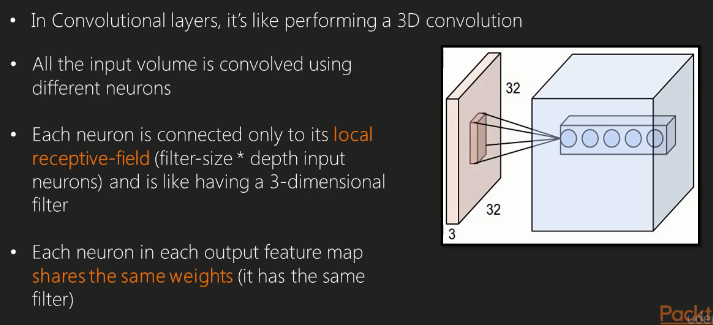
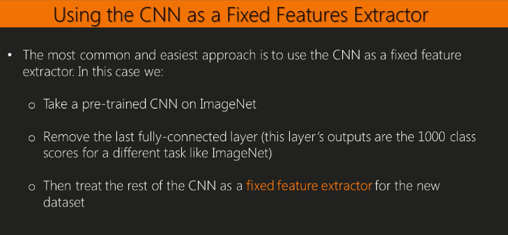

library(knitr)In this blog we are going to talk about
Let try to explain that in numerical terms:

A way to do this when dealing with image recognition is to plot what is being outputed after each layer. You can see at the beggining, the activations seem like dots, clouds or blobs (right image), but then bit by bit, the activation functions start localizing and grouping.
One thing to notice from the right image is for example, the black boxes. These black boxes indicate that the activation function has outputted majority of 0, which may not be true, and just a consequence of having used too much of a big learn rate.
Another way to understand CNN is to visualize the weights, instead of the actual output. The weights are useful to visualize because well trained networks usually display nice smooth filters without any noise (noise patterns can be an indicator of a network that isnt being trained enough or using a very low regulirization strength which may lead to overfitting)
Another visualization technique is to take a large daat set of images and feed them through the network, keeping track of which images maximally activates a neuron. We can then visualise the images to get an understanding of what a neuron is looking for in its receptive field. In the following screenshot, you can see that the first row the neuron is looking for faces, then dog faces, etc.
Suppose that the CNN classifies an image as a dog: how can we be certain that it’s choosing the right class based on the feature of the dog as opposed to some other objects. Imaginge we pick a grey square and add it as a patch to the image of interest. WE can do that and calculate the probability of whatever we want to calculate. For example, in the left image we can see that the probability of a dog when the patch covers the face of dog drops dramatically. In other words, the grey patch at every position shows a red heat map because we are certain we have a dog in the imagine, except when the patch covers the dogs face. This basically tells us that, in order to classify a dog, the most important bit is the dogs face!
In this section we will learn how to implement a Lenet7 with the MXNet package on the MNIST dataset in order to improve the accuracy on the recognition of handwritten digits.
Let’s import part of the the MNIST dataset:
# install.packages("drat")
# drat::addRepo("dmlc")
#
# install.packages("https://github.com/jeremiedb/mxnet_winbin/raw/master/mxnet.zip", repos = NULL)library(mxnet)
require(mxnet)## Loading required package: mxnet## Warning: package 'mxnet' was built under R version 3.4.3require(caret)## Loading required package: caret## Warning: package 'caret' was built under R version 3.4.3## Loading required package: lattice## Loading required package: ggplot2## Warning: package 'ggplot2' was built under R version 3.4.1And split the dataset in train and test set (you can also create the validation set to be more polite at home)
dataset <- read.csv('train.csv', header=TRUE)
dim(dataset)## [1] 42000 785train <- data.matrix(dataset[1:5000,])
test <- data.matrix(dataset[5000:10000,])
train.x <- train[,-1]
train.y <- train[,1]
test.x <- test[,-1]
test.y <- test[,1]
train.x <- t(train.x/255)
test.x <- t(test.x/255)Than we can create define the Lenet7:
# input
data <- mx.symbol.Variable('data')
# first conv
conv1 <- mx.symbol.Convolution(data=data, kernel=c(5,5), num_filter=20)
tanh1 <- mx.symbol.Activation(data=conv1, act_type="tanh")
pool1 <- mx.symbol.Pooling(data=tanh1, pool_type="max",
kernel=c(2,2), stride=c(2,2))
# second conv
conv2 <- mx.symbol.Convolution(data=pool1, kernel=c(5,5), num_filter=50)
tanh2 <- mx.symbol.Activation(data=conv2, act_type="tanh")
pool2 <- mx.symbol.Pooling(data=tanh2, pool_type="max",
kernel=c(2,2), stride=c(2,2))
# first fullc
flatten <- mx.symbol.Flatten(data=pool2)
fc1 <- mx.symbol.FullyConnected(data=flatten, num_hidden=500)
tanh3 <- mx.symbol.Activation(data=fc1, act_type="tanh")
# second fullc
fc2 <- mx.symbol.FullyConnected(data=tanh3, num_hidden=10)
# loss
lenet <- mx.symbol.SoftmaxOutput(data=fc2)
#Then let us reshape the matrices into arrays:
train.array <- train.x
dim(train.array) <- c(28, 28, 1, ncol(train.x))
test.array <- test.x
dim(test.array) <- c(28, 28, 1, ncol(test.x))And than training the CNN:
mx.set.seed(0)
tic <- proc.time()
model <- mx.model.FeedForward.create(lenet, X=train.array, y=train.y,
num.round=10, array.batch.size=100,
ctx=mx.cpu(), learning.rate=0.05, momentum=0.9,
wd=0.00001, eval.metric=mx.metric.accuracy,
epoch.end.callback=mx.callback.log.train.metric(100))## Start training with 1 devices## [1] Train-accuracy=0.104285714285714## [2] Train-accuracy=0.1042## [3] Train-accuracy=0.1042## [4] Train-accuracy=0.1294## [5] Train-accuracy=0.6298## [6] Train-accuracy=0.8852## [7] Train-accuracy=0.9344## [8] Train-accuracy=0.9584## [9] Train-accuracy=0.968## [10] Train-accuracy=0.9802preds <- predict(model, test.array)
dim(preds)## [1] 10 5001pred <- apply(preds, 2, which.max)
pred <- pred-1
caret::confusionMatrix(pred, test.y)## Confusion Matrix and Statistics
##
## Reference
## Prediction 0 1 2 3 4 5 6 7 8 9
## 0 485 0 0 0 0 2 6 1 1 0
## 1 0 526 2 1 0 0 0 2 2 1
## 2 1 4 484 7 4 0 0 13 6 0
## 3 0 0 1 502 0 6 0 1 3 1
## 4 0 1 1 0 464 0 1 3 0 3
## 5 2 0 1 9 0 422 3 0 2 3
## 6 5 2 2 0 6 5 475 0 4 0
## 7 0 1 3 4 0 0 0 504 3 11
## 8 3 2 6 6 2 2 2 1 448 2
## 9 1 1 0 0 14 0 0 8 4 497
##
## Overall Statistics
##
## Accuracy : 0.9612
## 95% CI : (0.9555, 0.9664)
## No Information Rate : 0.1074
## P-Value [Acc > NIR] : < 2.2e-16
##
## Kappa : 0.9569
## Mcnemar's Test P-Value : NA
##
## Statistics by Class:
##
## Class: 0 Class: 1 Class: 2 Class: 3 Class: 4 Class: 5 Class: 6 Class: 7 Class: 8 Class: 9
## Sensitivity 0.97586 0.9795 0.96800 0.9490 0.94694 0.96568 0.97536 0.9456 0.94715 0.95946
## Specificity 0.99778 0.9982 0.99222 0.9973 0.99800 0.99562 0.99468 0.9951 0.99426 0.99375
## Pos Pred Value 0.97980 0.9850 0.93256 0.9767 0.98097 0.95475 0.95190 0.9582 0.94515 0.94667
## Neg Pred Value 0.99734 0.9975 0.99643 0.9940 0.99426 0.99671 0.99733 0.9935 0.99448 0.99531
## Prevalence 0.09938 0.1074 0.09998 0.1058 0.09798 0.08738 0.09738 0.1066 0.09458 0.10358
## Detection Rate 0.09698 0.1052 0.09678 0.1004 0.09278 0.08438 0.09498 0.1008 0.08958 0.09938
## Detection Prevalence 0.09898 0.1068 0.10378 0.1028 0.09458 0.08838 0.09978 0.1052 0.09478 0.10498
## Balanced Accuracy 0.98682 0.9889 0.98011 0.9731 0.97247 0.98065 0.98502 0.9703 0.97070 0.97661